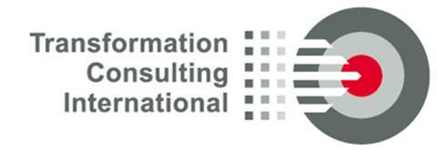
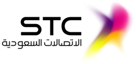
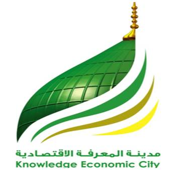

Home Services Contact
Profile Farasat
Farasat Saeed’s Past Career Contributions to Different Organizations in different capacities
|
Employer: Commtel Pakistan, Information Technology Client: Government, Financial Institutions and Banks, Telecom, Pharma etc Project: Project Manager & Central Sales Coordinator, Organizational Development, Event Management, Implement management vision |
|



Employer: Transformation Consulting International (TCI) on Behalf of Saudi Telecom, Saudi Arabia (STC) Client of STC: Knowledge Economic City (KEC) Madina Al Munawara Suaid Arabia Project: Independent Entrepreneur Project Manager PMO for Knowledge Economic City for implementation of Fiber FTTh |
|
Employer: Norconsult Telematics (NTSA) on Behalf of Saudi Telecom, Saudi Arabia (STC) Client: Mega Fiber Projects in Kingdom of Saudi Arabia Project: Senior Consultant, Project Manager, Project Reporting & Scheduling Analyst, Project Controller for Larger Fiber Projects, 2G/3G/4G Projects |
|
Employer: Telenor Pakistan Client: 2G BTS Rollout in Pakistan Project: Project Reporting Executive, Pakistan. First Launch of services Telenor in Pakistan |
|
Employer: Norconsult Telematics (NTSA) Pakistan Client: 2G BTS Rollout in Pakistan Project: Project Scheduler, Pakistan. First Launch of Services in Pakistan |
Career Achievements
Farasat Saeed has worked in different Multinational Organizations of world standing and on Mega projects. He has following key capability to his fame
- Project Management
- Program Management
- Project Control Management
- Project Management Office (PMO)
- Rollout Monitoring and Control
- Customer Project Management
- Partner / Independent Consultant
- Service Delivery
- Organizational Transformation
- Organizational Development & Employee Sciences
- Risk and Change Management
- Marketing and Event Management
- Business & Investment Consultancy